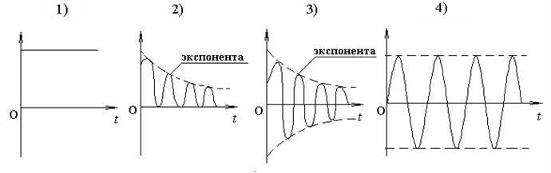
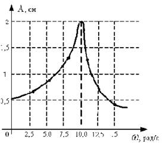
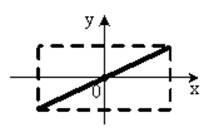
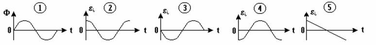
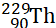
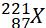
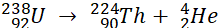
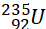

Дисциплина: Физика
Тема: 060 Механические колебания и волны
V061 – П Механические колебания
S061 – П Механические колебания (незатухающие, затухающие, вынужденные 30 заданий)
1. [Уд1] (ВО1) Полная механическая энергия пружинного маятника увеличилась в 2 раза. При этом амплитуда колебаний … раз(а).
1) увеличилась в 2
2) увеличилась в
3) уменьшилась в 2
4) уменьшилась в
:2
2. [Уд1] (ВО1) Материальная точка совершает гармонические колебания по закону . График, на котором изображена зависимость проекции ускорения этой точки от времени t –
1) 1
2) 2
3) 3
4) 4
:1
3. [Уд1] (ВО1) Материальная точка совершает колебания по закону . График, на котором изображена зависимость кинетической энергии материальной точки от времени –
1) 1
2) 2
3) 3
4) 4
:2
4. [Уд1] (ВО1) Материальная точка совершает колебания по закону . График, на котором изображена зависимость потенциальной энергии материальной точки от времени –
1) 1
2) 2
3) 3
4) 4
:4
5. [Уд1] (ВО1) На рисунке представлены графики гармонических колебаний материальных точек одинаковой массы, А1=2А2. Соотношение амплитудных значений ускорений колеблющихся точек следующее
1) am1 = am2
2) a m1 < am2
3) a m1 > am2
4) Однозначного ответа нет
:2
6. [Уд1] (ВО1) На рисунке представлены графики гармонических колебаний материальных точек одинаковой массы, А1=2А2. Соотношение амплитудных значений скоростей колеблющихся точек следующее
1) V m1 = Vm2
2) V m1 < Vm2
3) V m1 > Vm2
4) Однозначного ответа нет
:1
7. [Уд1] (ВО1) Даны уравнения гармонических колебаний четырёх пружинных маятников с одинаковыми коэффициентами упругости k. Маятник, имеющий наибольшую массу – … кг.
1)
2)
3)
4) 
:4
8. [Уд1] (ВО1) Даны уравнения гармонических колебаний четырёх пружинных маятников с одинаковыми коэффициентами упругости k. Маятник, имеющий наименьшую массу – … кг.
1)
2)
3)
4)

:2
9. [Уд1] (ВО1) Даны уравнения гармонических колебаний четырёх пружинных маятников с одинаковыми массами. Маятник, имеющий наибольший коэффициент упругости k – … Н/м.
1)
2)
3)
4) 
:2
10. [Уд1] (ВО1) Даны уравнения гармонических колебаний четырёх пружинных маятников с одинаковыми массами. Маятник, имеющий наименьший коэффициент упругости k – … Н/м.
1)
2)
3)
4)

:4
11. [Уд1] (ВО1) Даны уравнения гармонических колебаний материальной точки массы m . Коэффициент упругости k наибольший в случае
1) х = 3 sin (2πt + π) м
2) х = 3 cos (4πt +) м
3) x = 5 cos (15πt – ) м
4) x = 5 sin (5πt) м
:3
12. [Уд1] (ВО1) На рис.1 изображена зависимость проекции скорости материальной точки, совершающей гармонические колебания, от времени. На рис.2 график зависимости от времени проекции ускорения этой точки изображен под номером
1) 1
2) 2
3) 3
4) 4
:2
13. [Уд1] (ВО1) На рис.1 изображена зависимость проекции скорости материальной точки, совершающей гармонические колебания, от времени. На рис.2 график зависимости от времени смещения от положения равновесия этой точки изображен под номером
1) 1
2) 2
3) 3
4) 4
:1
14. [Уд1] (ВО1) Материальная точка массой m = 0,1 кг колеблется так, что проекция ах ускорения зависит от времени в соответствии с уравнением ах = 10 sin, м/с2. Проекция силы на ось ОХ, действующей на материальную точку в момент времени t = c равна … Н.
1) 0,25
2) 0,5
3) 0,83
4) 1,0
: 2
15. [Уд1] (ВО1) Если в колебательной системе изменяющаяся физическая величина описывается законом , то частота затухающих колебаний связана с собственной частотой соотношением
1)
2)
3)
4)
:4
16.
[Уд1] (ВО1) Уравнение затухающих колебаний материальной точки имеет вид  , где w = 6 рад/с, b = 8 с-1.
Логарифмический декремент затухания колебаний равен
, где w = 6 рад/с, b = 8 с-1.
Логарифмический декремент затухания колебаний равен
1) 83,7
2) 8,37
3) 0,63
4) 62,8
:2
17.
[Уд1] (ВО1) Уравнение затухающих колебаний материальной точки имеет вид  , где w = 6 рад/с, логарифмический декремент затухания l = 8,37
. Коэффициент затухания колебаний равен … с-1.
, где w = 6 рад/с, логарифмический декремент затухания l = 8,37
. Коэффициент затухания колебаний равен … с-1.
1) 8,0
2) 1,3
3) 0,6
4) 3,0
:1
18. [Уд1] (ВО1) Уравнение затухающих колебаний материальной точки имеет вид ,м. Если логарифмический декремент затухания колебаний λ = 0,1, то период T затухающих колебаний равен … мс.
1) 20
2) 25
3) 40
4) 75
:2
19. [Уд1] (ВО1) Уравнение затухающих колебаний материальной точки имеет вид ,м. Если логарифмический декремент затухания колебаний λ = 0,02, то частота ω затухающих колебаний равна … рад/с.
1) 50p
2) 100p
3) 200p
4) 300p
:4
20. [Уд1] (ВО1) На рисунке изображен график затухающих колебаний, где х - колеблющаяся величина, описываемая уравнением х(t) = A0e-βt sin (ωt + φ). Коэффициент затухания β равен
1) 0,5
2) 1
3) 2
4) 2,7
:1
21. [Уд1] (ВО1) Приведены графики механических колебаний. Два графика соответствуют зависимости смещения х, два других – зависимости кинетической Wk и полной энергии W системы от времени. Обозначения вертикальных осей не указаны.

Зависимости кинетической энергии системы от времени в неконсервативной системе соответствует график
1) 1
2) 2
3) 3
4) 4
:2
22. [Уд1] (ВО1) Приведены графики механических колебаний. Два графика соответствуют зависимости смещения х, два других – зависимости кинетической Wk и полной энергии W системы от времени. Обозначения вертикальных осей не указаны.
Зависимости полной энергии W системы от времени в консервативной системе соответствует график
1) 1
2) 2
3) 3
4) 4
:1
23. [Уд1] (ВО1) Приведены графики механических колебаний. Два графика соответствуют зависимости смещения х, два других – зависимости кинетической Wk и полной энергии W системы от времени. Обозначения вертикальных осей не указаны.
Зависимости смещения х от времени в консервативной системе соответствует график
1) 1
2) 2
3) 3
4) 4
:4
24. [Уд1] (ВО1) Приведены графики механических колебаний. Два графика соответствуют зависимости смещения х, два других – зависимости кинетической Wk и полной энергии W системы от времени. Обозначения вертикальных осей не указаны.
Зависимости смещения х от времени в неконсервативной системе соответствует график
1) 1
2) 2
3) 3
4) 4
:3
25. [Уд1] (ВО1) Приведены графики зависимости кинетической Wк и полной механической W энергии от времени t при различных видах механических колебаний. Обозначения осей ординат не указаны.
Зависимость полной энергии W от времени описывается … графиками.
1) 1 и 2
2) 2 и 4
3) 3 и 1
4) 4 и 3
:3
26. [Уд1] (ВО1) Уравнение движения пружинного маятника является дифференциальным уравнением … колебаний.
1) свободных незатухающих
2) затухающих
3) вынужденных
4) апериодических
:2
27. [Уд1] (ВО1) Уравнение движения пружинного маятника является дифференциальным уравнением … колебаний.
1) свободных незатухающих
2) затухающих
3) вынужденных
4) апериодических
:1
28. [Уд1] (ВО1) Уравнение движения пружинного маятника является дифференциальным уравнением … колебаний.
1) свободных незатухающих
2) затухающих
3) вынужденных
4) апериодических
:3
29. [Уд1] (ВО1) Решение дифференциального уравнения движения пружинного маятника ищется в виде зависимости
1) х = Acos (ω0t +jo)
2) х = Ao e-bt cos (ωt +jo)
3) x = 2A cos t ×cosωt
4) х = Ao e-2bt cos (ω0t +jo)
:2
30. [Уд1] (ВО1) На рисунке представлена зависимость амплитуды колебаний груза на пружине с жесткостью k = 10 Н/м от частоты внешней силы. Максимальная энергия в этой системе равна … Дж.
1) 0,002
2) 0,004
3) 20
4) 40
:1
C061 – П Механические колебания (сложение колебаний) – 16 заданий
1. [Уд1] (ВОМ) На рисунке под номерами 1, 2 изображены траектории результирующего движения при сложении двух взаимно перпендикулярных гармонических колебаний, а под номерами 3, 4 – векторные диаграммы сложения гармонических колебаний одного направления и одинаковой частоты ( - векторы амплитуд складываемых колебаний, - вектор амплитуды результирующего колебания). Амплитуды складываемых колебаний равны для случаев, приведенных под номерами
:1,3,4
2. [Уд1] (ВО1) Точка участвует одновременно в двух взаимно перпендикулярных колебаниях, выражаемых уравнениями x = 3coswt и y = -6coswt. Траекторией результирующего движения точки является
1) прямая линия
2) парабола
3) окружность
4) эллипс
:1
3. [Уд1] (ВО1) Складываются два гармонических колебания, происходящих в одном направлении.
1)  , м
и , м.
, м
и , м.
2)м и м.
3) , м и , м.
4) м и м.
Результирующее движение называется биением в (во) … случае.
1) 1
2) 2
3) 3
4) 4
:2
4. [Уд1] (ВО1) Складываются два гармонических колебания, происходящих в одном направлении: см и см. Амплитуда результирующего движения равна … см.
1) 7
2) 5
3) 3,5
4) 1
:2
5. [Уд1] (ВО1) Результат сложения двух гармонических колебаний одного направления с одинаковыми амплитудами и близкими частотами описывает уравнение
1) х = Acos (ω0t +jo)
2) A2 = A12 +A22 + 2A1A2 cos Dj
3) x = 2A cos t ×cosωt
4)
:3
6. [Уд1] (ВО1) Уравнение траектории при сложении двух гармонических колебаний взаимно перпендикулярных направлений с отличающимися амплитудами и одинаковыми частотами –
1) х = Acos (ω0t +jo)
2) A2 = A12 +A22 + 2A1A2 cos Dj
3) x = 2A cos t ×cosωt
4)
:4
7. [Уд1] (ВО1) Точка М одновременно совершает колебания по гармоническому закону вдоль осей координат ОХ и ОУ с одинаковыми амплитудами, разность фаз равна . При соотношении частот 1:1 траектория точки имеет вид, соответствующий схеме под номером
1) 1
2) 2
3) 3
4) 4
:3
8. [Уд1] (ВО1) Колебания точки М происходят вдоль осей Ох и Оу по закону синуса с различными амплитудами, но одинаковыми частотами. При разности фаз π траектория точки имеет вид, соответствующий схеме под номером
1) 1
2) 2
3) 3
4) 4
:2
9. [Уд1] (ВО1) Колебания точки М происходят вдоль осей Ох и Оу по закону синуса с одинаковыми амплитудами, и одинаковыми частотами. При разности фаз 0 траектория точки имеет вид, соответствующий схеме под номером
1) 1
2) 2
3) 3
4) 4
:4
10. [Уд1] (ВО1) Колебания точки М происходят вдоль осей Ох и Оу по закону синуса с одинаковыми амплитудами, но разными частотами. При разности фаз π/2 траектория точки имеет вид, соответствующий схеме под номером
1) 1
2) 2
3) 3
4) 4
:1
11. [Уд1] (ВО1) Точка М одновременно колеблется по гармоническому закону вдоль оcей координат ОХ и ОУ с одинаковыми амплитудами, разность фаз равна . При соотношении частот 3:2 траектория точки имеет вид на схеме, обозначенной номером
1) 1
2) 2
3) 3
4) 4
:4
12. [Уд1] (ВО1) При сложении двух взаимно-перпендикулярных колебаний одинаковой частоты траектория результирующего движения материальной точки представлена на рисунке. Тогда разность фаз Dj складываемых колебаний равна
1) π
2) 0
3) 3π
4) π/2
:2
13. [Уд1] (ВО1) Два гармонических колебания происходят с одинаковыми периодами в одном направлении с амплитудами А1=4 см и А2=3 см. Амплитуда их результирующего колебания Ар=7 см. Разность фаз складываемых колебаний равна
1) ∆φ = 0
2) ∆φ =
3) ∆φ =
4) ∆φ = π
:1
14. [Уд1] (ВО1) Два гармонических колебания происходят с одинаковыми периодами в одном направлении с амплитудами А1 = 4 см и А2 = 3 см. Амплитуда их результирующего колебания Ар = 5 см. Разность фаз складываемых колебаний равна
1) ∆φ = 0
2) ∆φ =
3) ∆φ =
4) ∆φ = π
:3
15. [Уд1] (ВО1) Два гармонических колебания происходят с одинаковыми периодами в одном направлении с амплитудами А1 = 4 см и А2 = 3 см. Амплитуда их результирующего колебания Ар = 1 см. Разность фаз складываемых колебаний равна
1) ∆φ = 0
2) ∆φ =
3) ∆φ =
4) ∆φ = π
:4
16. [Уд1] (ВО1) Два гармонических колебания происходят с одинаковыми периодами в одном направлении с амплитудами А1 = 4 см и А2 = 3 см. Разность фаз складываемых колебаний равна ∆φ = . Амплитуда их результирующего колебания составляет … см.
1) 7
2) 5
3) 1
4) 12
:2
Дисциплина: Физика
Тема: 060 Механические колебания и волны
V064 – П Волновое движение
S064 – П Волновое движение - 10 заданий
1. [Уд1] (ВО1) Решением волнового уравнения является уравнение плоской монохроматической волны x, которая распространяется вдоль направления оси Ох. Это уравнение представлено формулой
1)
2)
3)
4)
:4
2. [Уд1] (ВО1) Уравнение плоской синусоидальной волны, распространяющейся вдоль оси Ох со скоростью v = 500 м/с, имеет вид ξ = 0,01 sin (ωt – 2х). Циклическая частота ω равна … рад·с-1.
1) 1000
2) 159
3) 0,02
4) 0,001
:1
3. [Уд1] (ВО1) Уравнение плоской монохроматической волны x, которая распространяется вдоль положительного направления оси Ох представлено формулой
1)
2)
3)
4)
:4
4. [Уд1] (ВО1) Уравнение сферической монохроматической волны x представлено формулой
1)
2)
3)
4)
:3
5. [Уд1] (ВО1) Уравнение стоячей волны x представлено формулой
1)
2)
3)
4)
:2
6. [Уд1] (ВО1) При интерференции двух волн результирующая волна характеризуется изменением
1) частоты волны
2) длины волны
3) распределения энергии в пространстве
4) периода колебаний
:3
7. [Уд1] (ВО1) Источник колебаний, находится в упругой среде, и точки этой среды находятся на расстоянии м от источника. Частота колебаний Гц, фазовая скорость волны м/с. Разность фаз равна … рад.
1) 2π
2) 0,5π
3) 0,25π
4) 0,33π
:2
8. [Уд1] (ВО1) Если разность фаз колебаний источника волн в упругой среде равна = 0,5π рад, и точки этой среды находятся на расстоянии м от источника. Частота колебаний составляет Гц, тогда фазовая скорость волны равна … м/с.
1) 20
2) 30
3) 40
4) 50
:3
9. [Уд1] (О) Точки пространства, в которых амплитуда колебаний стоячей волны, равна нулю, называются … стоячей волны.
Узлы, узлами
10. [Уд1] (ВО1) В стоячей волне расстояния между двумя соседними пучностями равно
1) l
2) l/2
3) 3l/2
4) 2l
:2
C064 – П Волновое движение (графики) – 4 задания
1. [Уд1] (ВО1) В упругой среде в положительном направлении оси 0x распространяется плоская волна. На рисунке приведен график зависимости смещения ξ частицы среды от времени t в произвольной точке оси 0х. Циклическая частота волны … рад/c.
1) 2π
2) 0,8π
3) π/4
4) π/3
:3
2. [Уд1] (ВО1) В упругой среде в положительном направлении оси 0x распространяется плоская волна. На рисунке приведен график зависимости смещения ξ частицы среды от времени t в произвольной точке оси 0х. Если длина волны равна 40 м, то скорость распространения составляет … м/c.
1) 2
2) 5
3) 8
4) 10
:2
3. [Уд1] (ВО1) На рисунке приведена моментальная «фотография» модели плоской поперечной гармонической волны в момент времени t = 6 с. Источник колебаний находится в точке с координатой х = 0. В начальный момент времени (t = 0) все частицы среды находились в покое. Фазовая скорость волны равна … м/c.
1) 12
2) 6
3) 4
4) 2
:4
4. [Уд1] (ВО1) На рисунке приведена моментальная «фотография» модели плоской поперечной гармонической волны в момент времени t = 6 с. Источник колебаний находится в точке с координатой х = 0. В начальный момент времени (t = 0) все частицы среды находились в покое. Циклическая частота волны равна … рад/c.
1) 2π
2) 0,8π
3) π/4
4) π/3
:4
Дисциплина: Физика
Тема: 240 Электромагнитная индукция
v241П Электромагнитная индукция. Закон Фарадея
s241 Сингл П (Магнитный поток, самоиндукция, индуктивность, энергия МП) – 19 заданий
1. [Уд1] (О) Неподвижный проводящий контур находится в изменяющемся со временем магнитном поле. Вызывают появление ЭДС индукции в контуре силы … электрического поля.
:вихревого
2. [Уд1] (ВО1) Линии индукции магнитного поля пронизывают рамку площадью S = 0,5 м2 под углом α = 30° к ее плоскости, создавая магнитный поток, равный Ф = 2 Вб. Модуль индукции магнитного поля равен … Тл.
1) 8
2) 2,5
3) 3
4) 4,5
:1
3. [Уд1] (ВО1) Потокосцепление, пронизывающее катушку, концы которой соединены между собой, сопротивлением R в магнитном поле равно Y1. При изменении направления вектора магнитной индукции на противоположное, через катушку протекает заряд q. Верное выражение для заряда соответствует формуле
1)
2)
3)
4) q = 0
:1
4. [Уд1] (ВО1) Магнитный поток F, сцепленный с проводящим контуром, изменяется со временем так, как показано на рисунке под номером 1.
График, соответствующий зависимости от времени ЭДС индукции ei, возникающей в контуре представлен на рисунке
1) 1
2) 2
3) 3
4) 4
:4
5. [Уд1] (ВО1) В одной плоскости с прямолинейным проводником, по которому течет возрастающий со временем ток, находится проволочная квадратная рамка. Индукционный ток в рамке направлен 1) по часовой стрелке
2) против часовой стрелки
3) индукционный ток в рамке не возникает
4) направление может быть любым
:2
6. [Уд1] (ВОМ) Для получения ЭДС индукции в проводящем контуре, находящемся в магнитном поле, можно изменять со временем:
1) площадь контура;
2) угол между нормалью к плоскости контура и вектором магнитной индукции;
3) модуль вектора .
Силы Лоренца являются сторонними силами в случаях
:1 и 2
:1, 2
7. [Уд1] (ВО1) По обмотке соленоида индуктивностью L = 0,20 Гн течет ток силой I = 10 А. Энергия W магнитного поля соленоида равна ….… Дж.
1) 1
2) 100
3) 2
4) 10
:4
8. [Уд1] (ВО1) Проводник длиной l = 1,0 м движется со скоростью v = 5,0 м/с перпендикулярно к линиям индукции однородного магнитного поля. Если на концах проводника возникает разность потенциалов U = 0,02 В, то индукция магнитного поля В равна
1) 1 мТл
2) 2,5 мТл
3) 4 мТл
4) 10 мТ
:3
9. [Уд1] (ВО1) Магнитный поток F, сцепленный с проводящим контуром, изменяется со временем так, как показано на рисунке под номером 1. График, соответствующий зависимости от времени ЭДС индукции ei, возникающей в контуре, представлен на рисунке под номером
1) 1
2) 2
3) 3
4) 4
5) 5
:2
10. [Уд1] (ВО1) Проволочный виток диаметром D = 10 см и сопротивлением R = 3,14 Ом находится в однородном магнитном поле с индукцией B = 0,4 Тл. Нормаль к плоскости витка образует с направлением вектора В угол a = 60°. Заряд q, прошедший по витку при выключении магнитного поля, равен … мКл.
1) 1,5
2) 3,5
3) 0,5
4) 4,5
:3
11. [Уд1] (ВО1) Индуктивность катушки увеличили в 2 раза, а силу тока в ней уменьшили в 2 раза. Энергия магнитного поля катушки при этом
1) увеличилась в 8 раз
2) уменьшилась в 2 раза
3) уменьшилась в 8 раз
4) уменьшилась в 4 раза
:2
12. [Уд1] (ВО1) Число витков, приходящихся на единицу длины соленоида, увеличилось в 2 раза, а его объем остался неизменным. Индуктивность соленоида при этом
1) увеличилась в 2 раза
2) увеличилась в 4 раза
3) уменьшилась в 2 раза
4) не изменилась
:2
13. [Уд1] (О) Проволочный виток диаметром D = 10 см и сопротивлением R =3,14 Ом помещен в однородное магнитное поле с индукцией B = 0,4 Тл перпендикулярно его силовым линиям. При выключении магнитного поля по витку прошел заряд q, равный ……. мКл.
:1
14. [Уд1] (ВО1) По катушке индуктивности течет ток I= 10 А, затем ток выключается в течение Dt= 0,01 с. Каково значение ЭДС самоиндукции, возникающей при выключении тока, если индуктивность катушки L= 0,2Гн?
1) 20 В
2) 50 В
3) 100 В
4) 200 В
:4
15. [Уд1] (ВО1) Магнитный поток F, сцепленный с проводящим контуром, изменяется со временем так, как показано на рисунке на графике под номером 1. ЭДС индукции ei, возникающей в контуре, соответствует график под номером
1) 1
2) 2
3) 3
4) 4
5) 5
:4
16. [Уд1] (ВОМ) Проводящий контур находится в магнитном поле, индукция которого возрастает по модулю (см. рисунок). Можно утверждать, что:
1) в контуре возникает ЭДС индукции
2) индукционный ток направлен против движения часовой стрелки
3) на свободные носители электрического заряда в контуре действуют силы Лоренца
4) сторонними силами, вызывающими ЭДС индукции в контуре, являются силы вихревого электрического поля
:1,4
17. [Уд1] (ВО1) При размыкании электрической цепи, содержащей катушку с индуктивностью и сопротивлением R = 1,0 Ом, сила тока за время t = 1 с убывает в e раз (e – основание натурального логарифма). Индуктивность L катушки равна …… Гн.
1) L = 0,01
2) L = 0,1
3) L = 1
4) L = 0,5
:3
18. [Уд1] (ВО1) Проводящий контур 1 находится в магнитном поле, созданном током, текущим в цепи 2 (см. рисунок). Контур и цепь лежат в одной плоскости. Индукционный ток Ii в контуре 1 при размыкании цепи 2
1) будет протекать по часовой стрелке
2) будет протекать против часовой стрелке
3) не возникает
:2
19. [Уд1] (ВО1) Имеется катушка индуктивности L = 0,2 Гн и сопротивление R = 1,64 Ом. Если в момент времени t = 0,0 с ее концы замкнуть накоротко, то через время t = 0,1 с ток в катушке уменьшится в …… раза.
1) 1,72
2) 2,27
3) 5, 74
4) 3,74
:2
c241 Кластер П (Правило Ленца, закон Фарадея) – 19 заданий
1. [Уд1] (ВО1) На рисунке показан длинный проводник с током, в одной плоскости с которым находится небольшая проводящая рамка.
При выключении в проводнике тока заданного направления, в рамке индукционный ток
1) возникнет в направлении 1 – 2 – 3 – 4
2) возникнет в направлении 4 – 3 – 2 – 1
3) не возникает
:1
2. [Уд1] (ВО1) На рисунке показан длинный проводник, в одной плоскости с которым находится небольшая проводящая рамка.
При включении в проводнике тока заданного направления, в рамке индукционный ток
1) возникнет в направлении 1 – 2 – 3 – 4
2) возникнет в направлении 4 – 3 – 2 – 1
3) не возникает
:2
3. [Уд1] (ВО1) По параллельным металлическим проводникам, расположенным в однородном магнитном поле, с постоянной скоростью перемещается перемычка.
Зависимости индукционного тока, возникающего в цепи, от времени соответствует график
1) 1
2) 2
3) 3
4) 4
:1

4. [Уд1] (ВО1) На рисунке представлена зависимость магнитного потока, пронизывающего некоторый контур, от времени. График зависимости ЭДС индукции в контуре от времени представлен на рисунке
1) 1
2) 2
3) 3
:2
5. [Уд1] (ВО1) На рисунке представлена зависимость магнитного потока, пронизывающего некоторый замкнутый контур, от времени. ЭДС индукции в контуре отрицательна и по величине минимальна на интервале
1) С
2) D
3) B
4) E
5) А
:5
6. [Уд1] (ВО1) На рисунке представлена зависимость магнитного потока, пронизывающего некоторый замкнутый контур, от времени. ЭДС индукции в контуре отрицательна и по величине максимальна на интервале
1) E
2) D
3) А
4) B
5) С
:2
7. [Уд1] (ВО1) Контур площадью S = 10-2 м2 расположен перпендикулярно к линиям магнитной индукции. Магнитная индукция изменяется по закону В = (2 + 5t2)·10-2, Тл. Модуль ЭДС индукции, возникающей в контуре, изменяется по закону
1) e i = 10-3 t
2) e i = (2 +5t2)·10-4
3) e i = 10-2t
:1
8. [Уд1] (ВОМ) Две катушки намотаны на общий железный сердечник и изолированы друг от друга. На рисунке представлен график зависимости силы тока от времени в первой катушке. В каком интервале времени во второй катушке возникнет ЭДС индукции?
1) Только в интервале
2) Только в интервале
3) Только в интервале
4) В интервалах и
:4
9. [Уд1] (ВО1) Плоский проволочный виток площади S расположен в однородном магнитном поле так, что нормаль к витку противоположна направлению вектора магнитной индукции этого поля. Чему равно значение ЭДС ei индукции в момент времени t = t1, если модуль В магнитной индукции изменяется со временем t по закону В = a + bt2, где а и b - положительные константы?
1) ei = -2Sbt1.
2) ei = - S(a + b).
3) ei = 2Sbt1.
4) ei = 2Sb.
:3
10. [Уд1] (ВО1) На рисунке показана зависимость силы тока от времени в электрической цепи с индуктивностью L = 1 мГн. Модуль среднего значения ЭДС самоиндукции в интервале от 15 до 20 с равен … мкВ.
1) 0
2) 10
3) 20
4) 4
:4
11. [Уд1] (ВО1) На рисунке показана зависимость силы тока от времени в электрической цепи с индуктивностью L = 1 мГн. Модуль среднего значения ЭДС самоиндукции в интервале от 5 до 10 с равен …… мкВ.
1) 0
2) 10
3) 20
4) 2
:4
12. [Уд1] (ВО1) Сила тока, протекающего в катушке, изменяется по закону I = 1 – 0,2t. Если при этом на концах катушки наводится ЭДС самоиндукции = 2,0·10-2 В, то индуктивность катушки равна …… Гн.
1) 0,1
2) 0,4
3) 4
4) 1
:1
13. [Уд1] (ВО1) Через контур, индуктивность которого L = 0,02 Гн, течет ток, изменяющийся по закону I = 0,5sin500t. Амплитудное значение ЭДС самоиндукции, возникающей в контуре, равно … В.
1) 0,01
2) 0,5
3) 500
4) 5
:4
14. [Уд1] (ВО1) За время Δt = 0,5 с на концах катушки наводится ЭДС самоиндукции Eis = 25 В. Если при этом сила тока в цепи изменилась от I1 = 10 A до I2 = 5 A, то индуктивность катушки равна … Гн.
1) 2,5
2) 0,25
3) 0,025
4) 25
:1
15. [Уд1] (ВО1) За время Δt = 0,5 с на концах катушки наводится ЭДС самоиндукции Eis = 25 В. Если при этом сила тока в цепи изменилась от I1 = 20 A до I2 = 10 A, то индуктивность катушки равна … Гн.
1) 2,5
2) 0,25
3) 1,25
4) 25
:3
16. [Уд1] (ВО1) Направления индукционного тока в контуре и магнитного поля (от нас) указывают, что для величины магнитной индукции справедливо соотношение
1)
2)
3)
4) Знак неопределим
:2
17. [Уд1] (ВО1) Направления индукционного тока в контуре и магнитного поля (к нам) указывают, что для величины магнитной индукции справедливо соотношение
1)
2)
3)
4) Знак неопределим
:3
18. [Уд1] (О) При движении рамок в однородном магнитном поле в направлениях, указанных стрелками, ЭДС индукции возникает в случае под номером
:3
19. [Уд1] (О) По параллельным металлическим проводникам, расположенным в однородном магнитном поле, с постоянной скоростью перемещается перемычка. Зависимость Ei - ЭДС индукции, возникающей в цепи, правильно представлена на рисунке под номером
:3
Дисциплина: Физика
Тема: 250 Электромагнитные колебания и волны
V251П Электромагнитные колебания.
S251 П электромагнитные колебания – 23 задания
1. [Уд] (ВО1) В колебательном контуре зависимость заряда на пластинах конденсатора от времени описывается дифференциальным уравнением вида . Эти колебания называются
1) незатухающими
2) затухающими
3) вынужденными
4) гармоническими
:2
2. [Уд] (ВО1) В колебательном контуре зависимость заряда на пластинах конденсатора от времени описывается дифференциальным уравнением вида . Эти колебания называются
1) незатухающими
2) затухающими
3) вынужденными
4) гармоническими
:1
3. [Уд] (ВО1) В колебательном контуре зависимость заряда на пластинах конденсатора от времени описывается дифференциальным уравнением вида . Эти колебания называются
1) незатухающими
2) затухающими
3) вынужденными
4) гармоническими
:3
4. [Уд] (ВО1). Если частота колебаний в контуре возросла в 3 раза, а заряд конденсатора и индуктивность катушки не менялись, то энергия магнитного поля в катушке … раз(а).
1) уменьшилась в 3
2) увеличилась в 3
3) уменьшилась в 9
4) увеличилась в 9
:4
5. [Уд] (ВО1) Максимальная энергия электрического колебательного контура 4,5 Дж. При циклической частоте свободных колебаний в контуре, равной 1·104с-1, и емкости конденсатора 4 мкФ максимальный ток через катушку индуктивности равен
1) 6 мкА
2) 6 мА
3) 6 А
4) 60 А
:4
6. [Уд] (ВО1) В колебательном контуре в начальный момент времени напряжение на конденсаторе максимально. Напряжение на конденсаторе станет равным нулю через долю периода электромагнитных колебаний, равную
1)
2)
3)
4) T
:1
7. [Уд] (ВО1) В колебательном контуре в начальный момент времени напряжение на конденсаторе максимально. Сила тока станет равной нулю через долю периода электромагнитных колебаний, равную
1)
2)
3)
4) T
:2
8. [Уд] (ВО1) Сила тока в колебательном контуре изменяется по закону ,мА. Амплитуда колебаний заряда на обкладках конденсатора равна … мкКл.
1) 2
2) 6
3) 12
4) 30
:4
9. [Уд] (ВО1) Если в колебательном контуре увеличить емкость конденсатора в 2 раза и заряд на нем увеличить в 2 раза, то амплитуда колебаний тока в контуре … раз(а).
1) увеличится в 2
2) увеличится в
3) уменьшится в
4) уменьшится в 2
:2
10. [Уд] (ВО1) Если в колебательном контуре уменьшить емкость конденсатора в 2 раза, то, при одинаковом заряде конденсатора, максимальная энергия магнитного поля в катушке индуктивности … раза.
1) увеличится в 2
2) увеличится в
3) уменьшится в
4) уменьшится в 2
:1
11. [Уд] (ВО1) Если частота колебаний в контуре возросла в 2 раза, а заряд конденсатора и индуктивность катушки не менялись, то энергия магнитного поля в катушке … раза.
1) уменьшилась в 2
2) увеличилась в 2
3) уменьшилась в 4
4) увеличилась в 4
:4
12. [Уд] (ВО1) Время релаксации затухающих электромагнитных колебаний наибольшее в случае
1) , мкКл
2) , мкКл
3) , В
4) , В
:3
13. [Уд] (ВО1) Ниже приведены уравнения затухающих электромагнитных колебаний. Логарифмический декремент затухания наибольший в случае
1) , В
2), мкКл
3) , мкКл
4) , В
:1
14. [Уд] (ВО1) Уменьшение амплитуды колебаний в системе с затуханием характеризуется временем релаксации. Если при неизменном омическом сопротивлении в колебательном контуре увеличить в 2 раза индуктивность катушки, то время релаксации … раза.
1) уменьшится в 4
2) увеличится в 2
3) увеличится в 4
4) уменьшится в 2
:2
15. [Уд] (ВО1) Уменьшение амплитуды колебаний в системе с затуханием характеризуется временем релаксации. Если при неизменной индуктивности в колебательном контуре увеличить омическое сопротивление в 2 раза катушки, то время релаксации … раза.
1) уменьшится в 4
2) увеличится в 2
3) увеличится в 4
4) уменьшится в 2
:4
16. [Уд] (ВО1) Ниже приведены уравнения собственных незатухающих электромагнитных колебаний в четырех контурах с одинаковой емкостью. Индуктивность L контура наименьшая в случае
1) q = 10-6cos(4pt +), Кл
2) U = 3cos2pt, В
3) q = 10-8cos(pt +), Кл
4) I = –2×sin2pt, А
:1
17. [Уд] (ВО1) Ниже приведены уравнения собственных незатухающих электромагнитных колебаний в четырех контурах с одинаковой индуктивностью. Емкость C контура наибольшая в случае
1) q = 10-6cos(4pt +), Кл
2) U = 3cos2pt, В
3) q = 10-8cos(pt +), Кл
4) I = –2×sin2pt, А
:3
18. [Уд] (ВО1) Уравнение изменения тока со временем в колебательном контуре имеет вид А. Индуктивность контура L =1 Гн. Емкость контура C равна … нФ.
1) 100
2) 314
3) 400
4) 634
:4
19. [Уд] (ВО1) Уравнение изменения тока со временем в колебательном контуре имеет вид А. Если индуктивность контура составляет L =1 Гн, то максимальное напряжение между обкладками равно … В.
1) 18
2) 25
3) 47
4) 63
:4
20. [Уд] (ВО1) Уравнение изменения тока со временем в колебательном контуре имеет вид А. Индуктивность контура L =1 Гн. Максимальная энергия электрического поля составляет … мДж.
1) 1,25
2) 2,50
3) 12,5
4) 25
:1
21. [Уд] (ВО1) В идеальном колебательном контуре происходят свободные незатухающ колебания. Отношение энергии магнитного поля колебательного контура к энергии его электрического поля для момента времени t = T/8 равно
1) 0
2) 0,5
3) 1
4) 1,73
:3
22. [Уд] (ВО1) В момент времени конденсатор идеального электрического колебательного контура заряжают до амплитудного значения , после чего контур предоставляют самому себе. Если период колебаний в контуре мкс, то минимальное время после начала колебаний, через которое энергия электрического поля конденсатора уменьшится на , составляет … мкс.
1) 0
2) 0,5
3) 1
4) 3
:3
23.
[Уд] (ВО1) В момент времени конденсатор
идеального электрического колебательного контура заряжают до амплитудного
значения , после чего контур
предоставляют самому себе. Если период колебаний в контуре мкс, то минимальное время
после начала
колебаний, через которое энергия электрического поля
конденсатора уменьшится на  ,
составляет … мкс.
,
составляет … мкс.
1) 0,2
2) 0,5
3) 2,3
4) 7,2
:2
С252 П электромагнитные колебания ( Работа с графиками ) – 12 заданий
1. [Уд] (ВО1) На рисунке изображен график зависимости напряжения U на конденсаторе в идеальном электрическом контуре от времени t. Индуктивность контура L = 1,0 Гн. Максимальное значение электрической энергии колебательного контура равно … мкДж.
1) 16 мкДж
2) 81 мкДж
3) 100 мкДж
4) 110 мкДж
:2
2. [Уд] (ВО1) На рисунке изображен график зависимости напряжения U на конденсаторе в идеальном электрическом контуре от времени t. Индуктивность контура L = 1,0 Гн. Максимальное значение магнитной энергии колебательного контура равно
1) 110 мкДж
2) 105 мкДж
3) 90 мкДж
4) 81 мкДж
:4
3. [Уд] (ВО1) На рисунке приведен график зависимости заряда q от времени t в идеальном закрытом колебательном контуре. График зависимости напряжения между пластинами конденсатора U от времени t приведен под номером …
1) 1
2) 2
3) 3
4) 4
:3
4. [Уд] (ВО1) На рисунке приведен график зависимости заряда q от времени t в идеальном колебательном контуре. Зависимость Wэл энергии магнитного поля в катушке индуктивности от времени t показана правильно на графике
1) 1
2) 2
3) 3
4) 4
:4
5. [Уд] (ВО1) На рисунке приведен график зависимости заряда q от времени t в идеальном колебательном контуре. Циклическая частота колебаний энергии электрического поля конденсатора равна … рад/с.
1) 0,102·106
2) 0,435·106
3) 0,785·106
4) 1.570·106
:4
6. [Уд] (ВО1) На рисунке приведен график зависимости заряда q от времени t в идеальном колебательном контуре. Амплитудное значение силы тока в контуре равно … А.
1) 6102
2) 4356
3) 2356
4) 1570
:3
7. [Уд] (ВО1) На рисунке приведен график зависимости заряда q от времени t в идеальном колебательном контуре. Частота на которую настроен контур равна … кГц.
1) 24
2) 240
3) 125
4) 2400
:3
8. [Уд] (ВО1) На рисунке приведен график зависимости силы тока i от времени t в идеальном закрытом колебательном контуре. Процесс изменения электрической энергии в контуре показан правильно на графике
1) 1
2) 2
3) 3
4) 4
:3
9. [Уд] (О) На рисунке представлена зависимость амплитуды колебаний на пластинах конденсатора в различных колебательных контурах от времени:
Если активное сопротивление контура в них одинаково, то максимальная индуктивность соответствует зависимости, обозначенной кривой …
:3
10. [Уд] (О) Зависимость полной энергии электрического и магнитного поля в различных колебательных контурах от времени представлена на рисунке. Если индуктивность контура в них одинакова, то максимальное сопротивление контура в них соответствует зависимости, обозначенной кривой …
:1
11. [Уд] (О) Зависимость полной энергии электрического и магнитного поля в различных колебательных контурах от времени представлена на рисунке. Если индуктивность в них одинакова, то максимальное активное сопротивление в них соответствует зависимости, обозначенной кривой …
:3
12. [Уд] (ВО1) В колебательном контуре совершаются затухающие электромагнитные колебания, полная энергия может быть представлена графиком…
1) а
2) б
3) в
4) г
:3
Дисциплина: Физика
V254 – П Электромагнитные волны.
S254 – П Электромагнитные волны. – 9 заданий
1. [Уд] (ВО1) Радиопередатчик излучает ЭМВ с длиной .Чтобы контур радиопередатчика излучал ЭМВ с длиной /2, электроемкость конденсатора в контуре C контура необходимо … раза.
1) уменьшить в 4
2) увеличить в 4
3) увеличить в 2
4) уменьшить в 2
:1
2. [Уд] (ВО1) Длина излучаемых антенной радиостанции электромагнитных волн равна 15 м. Радиостанция работает на частоте … МГц.
1) 10
2) 15
3) 20
4) 25
:3
3. [Уд] (ВО1) Абсолютный показатель преломления данной среды равен 1,33. Электромагнитная волна распространяется в некоторой среде со скоростью … м/c.
1) 2,25·108
2) 2,5·108
3) 2,75·108
4) 3,0·108
:1
4.
[Уд] (ВО1) В электромагнитной волне, распространяющейся в вакууме со скоростью
, происходят колебания
векторов напряженности электрического поля и индукции магнитного поля  . При этих колебаниях векторы , , имеют взаимную
ориентацию
. При этих колебаниях векторы , , имеют взаимную
ориентацию
1) ║, ║, ║
2) , ║, ║
3) ║, ,
4) , ,
:4
5. [Уд] (ВО1) При переходе электромагнитной волны из одной среды в другую изменяются … волны.
1) частота и скорость распространения
2) период и амплитуда
3) скорость и длина
4) частота и длина
:3
6. [Уд] (ВО1) В вакууме распространяется плоская электромагнитная волна, амплитуда электрической составляющей которой равна Еm = 50 мВ/м. Максимальное значение напряженности магнитного поля … мкА/м.
1) 103,5
2) 132,7
3) 35,8
4) 78,9
:2
7. [Уд] (ВО1) Радиостанция работает на частоте 500 кГц. В некоторый момент времени в точке А электрическое поле электромагнитной волны равно нулю, ближайшая к ней точка В, в которой величина магнитного поля волны принимает максимальное значение, находится на расстоянии … м.
1) 0
2) 150
3) 300
4) 600
:2
8. [Уд] (ВО1) Длина электромагнитной волны, распространяющейся в некоторой среде составляет l = 4 м. Магнитная и диэлектрическая проницаемости среды соответственно равны: μ = 1, ε = 9. Период колебаний ЭМВ равен … c.
1) 8·10-8
2) 6·10-8
3) 4·10-8
4) 2·10-8
:3
9. [Уд] (ВО1) При уменьшении в 2 раза амплитуды колебаний векторов напряженности электрического и магнитного полей плотность потока энергии
1) уменьшится в 2 раза
2) останется неизменной
3) уменьшится в 4 раза
3) увеличится в 4 раза
:3
C254 – П Электромагнитные волны (графики). – 5 заданий
1. [Уд] (ВО1) В вакууме в положительном направлении оси 0у распространяется плоская электромагнитная волна. На рисунке приведен график зависимости проекции Вх на ось 0х индукции магнитного поля волны от координаты у в произвольный момент времени t. Период Т волны равен … c.
1) 8·10-8
2) 6·10-8
3) 4·10-8
4) 2·10-8
:4
2. [Уд] (ВО1) На рисунке показана ориентация векторов
напряженности электрического () и
магнитного ( ) полей в электромагнитной
волне. Вектор плотности потока энергии электромагнитного поля ориентирован в
направлении
) полей в электромагнитной
волне. Вектор плотности потока энергии электромагнитного поля ориентирован в
направлении
1) 3
2) 2
3) 1
4) 4
:4
3. [Уд] (ВО1) На рисунке показана ориентация векторов
напряженности электрического () и
магнитного ( ) полей в
электромагнитной волне. Вектор плотности потока энергии электромагнитного поля
ориентирован в направлении
) полей в
электромагнитной волне. Вектор плотности потока энергии электромагнитного поля
ориентирован в направлении
1) 2
2) 4
3) 1
4) 3
:1
4. [Уд] (ВО1) На рисунке представлена мгновенная фотография электрической составляющей электромагнитной волны, переходящей из среды 1 в среду 2 перпендикулярно границе раздела сред АВ. Отношение скорости света в среде 2 к его скорости в среде 1 равно
1) 0,67
2) 1,5
3) 0,84
4) 1,75
:1
5. [Уд] (ВО1) На рисунке представлена мгновенная фотография электрической составляющей электромагнитной волны, переходящей из среды 1 в среду 2 перпендикулярно границе раздела сред АВ. Относительный показатель преломления среды 2 относительно среды 1 равен
1) 1,75
2) 0,67
3) 1,00
4) 1,5
:4
Дисциплина: Физика
Индекс темы 310 «Волновая оптика»
Вариация v314 Интерференция и дифракция световых волн
Контроль: П - промежуточный
П С314 Кластер (Интерференция света) 19 заданий
1. [Уд] (ВО1) Оптическая разность хода двух волн DL12, прошедших расстояние r1 в среде с показателем преломления n1 , и расстояние r2 в среде с показателем преломления n2 , равна
1) r1 – r2
2) (r1 – r2) (n1 –n2)
3) –
4) r1n1 –r2n2
:4
2. [Уд] (ВО1) Две когерентные световые волны, приходящие в некоторую точку, максимально усиливают друг друга, если для разности фаз выполняется следующее условие
1)
2)
3)
4)
:3
3. [Уд] (ВО1) Две когерентные световые волны, приходящие в некоторую точку, максимально ослабляют друг друга, если для разности фаз выполняется следующее условие
1)
2)
3)
4)
:1
4. [Уд] (ВО1) Условие интерференционного максимума можно записать следующим образом –
1)
2) d
3)
4)
:3
5. [Уд] (ВО1) Условие интерференционного минимума можно записать следующим образом
1) 
2) d
3)
4)
:4
6. [Уд] (ВО1) Для наблюдения линий равного наклона в монохроматическом свете должна быть переменной величиной
1) толщина пленки
2) показатель преломления пленки
3) угол падения световых лучей
4) интенсивность падающего света
:3
7. [Уд] (ВО1) На рисунке приведена схема установки для наблюдения колец Ньютона (линза большого радиуса кривизны и стеклянная пластинка расположены в воздухе). Кольца Ньютона в отраженном свете можно наблюдать при интерференции световых волн, номера которых
1) 1 и 2
2) 2 и 3
3) 3 и 4
4) 1 и 4
:2
8. [Уд] (ВО1) Оптическая разность хода двух волн, прошедших одинаковое расстояние L, если одна распространялась в вакууме, а другая – в среде с показателем преломления n, равна
1) 0
2) L(n-1)
3) Ln
4) l
:2
9. [Уд] (ВО1) Световая волна из воздуха падает на плоскопараллельную стеклянную пластину толщиной d и показателем преломления n1, лежащую на столе с показателем преломления n2 (см. рисунок). Если n1<n2 , то оптическая разность хода D21 волн 2 и 1, отраженных от нижней и верхней граней пластинки определяется выражением
1) D21 = 2d(n2 – n1)
2) D21 = 2dn1 + l/2
3) D21 = dn1
4) D21 = 2dn1
:4
10. [Уд] (ВО1) В данную точку пространства пришли две световые волны с одинаковым направлением колебаний вектора , периодами Т1 и Т2 и начальными фазами φ1 и φ2. Интерференция наблюдается в случае
1) Т1 = 2 с; Т2 = 2с; φ1 – φ2 = const
2) T1 = 2 c; Т2 = 4 с;φ1 – φ2 = const
3) Т1 = 2 с; Т2 = 2с; φ1 – φ2 const
4) T1 = 2 c; Т2 = 4 с; φ1 – φ2 const
:1
11. [Уд] (ВО1) Тонкая пленка, освещенная белым светом, вследствие явления интерференции в отраженном свете имеет зеленый цвет. При уменьшении толщины пленки ее цвет
1) не изменится
2) станет красным
3) станет синим
:3
12. [Уд] (ВО1) Интерферируют две одинаково поляризованных волны с одинаковыми интенсивностями I и разностью фаз Dj = 0. Результирующая интенсивность будет равна
1) 7I
2) 4I
3) 1,3I
4) 2I
:2
13. [Уд] (ВО1) Интерферируют две одинаково поляризованных волны с одинаковыми интенсивностями I и разностью фаз Dj = p. Результирующая интенсивность будет равна
1) 7I
2) 4I
3) 0
4) 2I
:3
14. [Уд] (ВО1) На плоскопараллельную стеклянную пластинку падает световая волна (см. рисунок). Волны 1 и 2, отраженные от верхней и нижней граней пластинки, интерферируют. Для показателей преломления сред выполняется соотношение: n1 < n2 < n3. В этом случае оптическая разность хода D21 волн 1 и 2 равна
1) AD·n1
2) (AB + BC)·n2
3) (AB + BC)·n2 – AD·n1
4) (AB + BC)·n2 – AD·n1 + λ/2
:3
15. [Уд] (ВО1) На пути луча, идущего в воздухе, поставили стеклянную пластинку толщиной d= 3 мм так, что луч падает на пластинку нормально. Показатель преломления стекла n = 1,5. Оптическая длина пути луча при этом…
1) уменьшилась на 2 мм
2) увеличилась на 2 мм
3) уменьшилась на 4,5 мм
4) увеличилась на 4,5 мм
:4
16. [Уд] (ВО1) Световая волна из воздуха падает на плоскопараллельную стеклянную пластину толщиной d и показателем преломления n1, лежащую на столе с показателем преломления n2 (см. рисунок). Если n1<n2 , то лучи 2 и 1, отраженные от нижней и верхней граней пластинки, усиливают друг друга в случае, представленном под номером
1) 2d(n2 – n1)=ml
2) 2dn1 + l/2=(2m+1)l/2
3) 2dn1=2ml/2
4) 2dn1 + l/2=2ml/2
: 3
17. [Уд] (ВО1) На плоскопараллельную стеклянную пластинку падает световая волна (см. рисунок). Волны 1 и 2, отраженные от верхней и нижней граней пластинки, интерферируют. Для показателей преломления сред выполняется соотношение: n1<n2<n3. Волны 1 и 2 гасят друг друга в случае, представленном под номером…
1) (AB+BC)×n2 -AD×n1=(2m+1)l/2
2) AD×n1=2ml/2
3) (AB+BC)×n2 -AD×n1+l/2=(2m+1)l/2
4) (AB+BC)×n2=2ml/2
: 1
18. [Уд] (ВО1) Свет падает на тонкую пленку с показателем преломления n, большим, чем показатель преломления окружающей среды. Разность хода лучей на выходе из тонкой пленки равна …
1) ВС+СD+BM +l/2
2) (BC+CD)n – BM – l/2
3) BC + CD – BM
4) (BC + CD)n - BM
: 4
19. [Уд] (ВО1) При интерференции света в тонкой пленке для наблюдения полос равной толщины должна быть переменной
1) длина световой волны
2) угол падения световой волны
3) толщина пленки
4) интенсивность падающей световой волны
:3
Контроль: П - промежуточный
П S314 Сингл ( Дифракция ) 17 заданий
1. [Уд] (ВО1) На пути сферической световой волны поставлена зонная пластинка (З.П.), которая перекрывает свет от нечетных зон Френеля. По сравнению с полностью открытым фронтом волны интенсивность света в точке наблюдения Р
1) станет равной нулю
2) не изменится
3) значительно уменьшится
4) значительно возрастет
:4
2. [Уд] (ВО1) На пути сферической световой волны поставлена зонная пластинка (З.П.), которая перекрывает свет от четных зон Френеля. По сравнению с полностью открытым фронтом волны интенсивность света в точке наблюдения Р
1) станет равной нулю
2) значительно уменьшится
3) значительно возрастет
4) не изменится
:3
3. [Уд] (ВО1) Дифракционная решетка содержит 500 штрихов на 1 миллиметр. Период дифракционной решетки равен … мкм.
1) 0,2
2) 0,5
3) 1
4) 2
:4
4. [Уд] (ВО1) Если период дифракционной решетки равен d = 800 нм, то на каждом миллиметре дифракционной решетки содержится … штрихов.
1) 400
2) 800
3) 1250
4) 1600
:3
5. [Уд] (ВО1) Сферическая световая волна падает на круглое отверстие в непрозрачном экране. Интенсивность света в точке наблюдения напротив отверстия по сравнению с полностью открытым фронтом волны
1) увеличится, если открыты две первые зоны Френеля
2) возрастает, если закрыты все зоны Френеля, кроме первой
3) не зависит от расстояния между экраном и точкой наблюдения
4) всегда будет меньше
:2
6. [Уд] (ВО1) На узкую щель шириной а = 0,03 мм падает нормально монохроматический свет с длиной волны l = 420 нм. Под углом j=3,20 наблюдается минимум света порядка m. Порядок дифракционного минимума m равен
1) 4
2) 7
3) 5
4) 2
:1
7. [Уд] (ВО1) На узкую щель шириной a=0,02 мм падает нормально монохроматический свет с длиной волны l=700 нм. Угол дифракции, соответствующий минимуму второго порядка, равен
1) j = 5º
2) j = 3º
3) j = 4º
4) j = 2º
:3
8. [Уд] (ВО1) Между точечным источником света и экраном помещен непрозрачный диск (см. рис.)
Распределение интенсивности I света на экране качественно правильно изображено на графике под номером
1) 1
2) 2
3) 3
4) 4
:3
9. [Уд] (ВО1) Между точечным источником света и экраном помещена непрозрачная преграда с круглым отверстием (см. рисунок). В отверстие укладывается четное число зон Френеля.
Распределение интенсивности I света на экране качественно правильно изображено на графике под номером
1) 1
2) 2
3) 3
4) 4
:4
10. [Уд] (ВО1) Между точечным источником света и экраном помещена непрозрачная преграда с круглым отверстием (см. рисунок). В отверстие укладывается нечетное число зон Френеля.
Распределение интенсивности I света на экране качественно правильно изображено на графике под номером

1) 1
2) 2
3) 3
4) 4
:3
 11. [Уд] (ВО1) На рисунке представлена схема разбиения
волновой поверхности Ф на зоны Френеля. Разность хода между лучами N1P и N2P равна
11. [Уд] (ВО1) На рисунке представлена схема разбиения
волновой поверхности Ф на зоны Френеля. Разность хода между лучами N1P и N2P равна
1) 2λ
2) λ
3) λ
4) λ
5) 0
:2
12. [Уд] (ВО1) На диафрагму с круглым отверстием падает нормально параллельный пучок света с длиной волны λ. На пути лучей, прошедших через отверстие, на расстоянии L помещают экран. Если отверстие открывает две зоны Френеля, то в центре экрана в точке М будет наблюдаться….
1) темное пятно
2) светлое пятно
3) однозначного ответа дать нельзя
:4
13. [Уд] (ВОМ) На дифракционную решетку нормально падает монохроматический свет. Число главных максимумов дифракционной картины зависит от…
1) постоянной решетки
2) размеров решетки
3) длины волны падающего света
4) интенсивности световой волны
:1, 3
14. [Уд] (ВОМ) Между точечным источником света S и точкой наблюдения Р поставлен экран (Э) с круглым отверстием. Верные утверждения:
1) с удалением от экрана точки наблюдения P число зон Френеля, укладывающихся в отверстии, уменьшается
2) с удалением точки наблюдения P число зон Френеля, укладывающихся в отверстии, не изменится
3) в точке наблюдения интенсивность света может оказаться близкой к нулю
4) расстояние от точки наблюдения до соответствующих краев двух соседних зон Френеля отличается на половину длины волны
:1, 3, 4
15. [Уд] (ВО1) Дифракционная решетка освещается монохроматическим светом. На угловое расстояние между главными максимумами не влияет
1) интенсивность света
2) постоянная дифракционной решетки
3) длина световой волны
4) порядки соседних максимумов
:1
 16. [Уд] (ВО1) При дифракции на дифракционной решетке
наблюдается зависимость интенсивности излучения с длиной волны λ = 600 нм от
синуса угла дифракции, представленная на рисунке (изображены только главные
максимумы). Постоянная d решетки равна…мкм
16. [Уд] (ВО1) При дифракции на дифракционной решетке
наблюдается зависимость интенсивности излучения с длиной волны λ = 600 нм от
синуса угла дифракции, представленная на рисунке (изображены только главные
максимумы). Постоянная d решетки равна…мкм
1) 1,2
2) 2,4
3) 3,0
4) 5,0
: 3
17. [Уд] (О) Одна и та же дифракционная решетка освещается различными монохроматическими излучениями с разными интенсивностями (J – интенсивность света, φ – угол дифракции). Случаю освещения светом с наименьшей длиной волны соответствует рисунок под номером
:4
Дисциплина: Физика
Индекс темы 320 «Квантовая оптика»
Вариация v321 Тепловое излучение
Контроль: П - промежуточный
П С321 Кластер (Графики, простые задания ) 13 заданий
1. [Уд] (ВО1) На рисунке представлена зависимость спектральной плотности энергетической светимости абсолютно черного тела от длины волны при некоторой температуре. При повышении температуры
1) увеличится длина волны, соответствующая максимуму излучения
2) увеличится высота максимума функции
3) уменьшится площадь под графиком
4) уменьшится энергетическая светимость
:2
2. [Уд] (ВОМ) На рисунке представлена зависимость спектральной плотности энергетической светимости абсолютно черного тела от длины волны при некоторой температуре Т. При понижении температуры тела справедливы следующие утверждения:
1) значение lm, увеличится
2) значение lm уменьшится
3) максимальное значение (rlT)max увеличится
4) максимальное значение (rlT)max уменьшится
:1, 4
3. [Уд] (ВОМ) На рисунке представлена зависимость спектральной плотности энергетической светимости абсолютно черного тела от длины волны при некоторой температуре. При повышении температуры увеличатся:
1) длина волны, соответствующая максимуму излучения
2) высота максимума функции
3) площадь под графиком
4) энергетическая светимость
: 2, 3, 4
4. [Уд] (ВО1) Распределение энергии в спектре излучения абсолютно черного тела в зависимости от частоты излучения для температур Т1 и Т2 (Т2 > Т1) верно представлено на рисунке
1) 1
2) 2
3) 3
:1
5. [Уд] (ВО1) На рисунке показаны кривые зависимости спектральной плотности энергетической светимости абсолютно черного тела от длины волны при разных температурах. Если кривая 1 соответствует спектру излучения абсолютно черного тела при температуре 6000 К, то кривая 2 соответствует температуре … К.
1) 750
2) 1000
3) 3000
4) 1500
:4
6. [Уд] (ВО1) На рисунке показаны кривые зависимости спектральной плотности энергетической светимости абсолютно черного тела от длины волны при разных температурах. Если кривая 2 соответствует спектру излучения абсолютно черного тела при температуре 1450 К, то кривая 1 соответствует температуре … К.
1) 5800
2) 1933
3) 2900
4) 725
:1
7. [Уд] (ВО1) Если при уменьшении температуры площадь фигуры под графиком спектральной плотности энергетической светимости абсолютно черного тела rν,T уменьшилась в 16 раз, то отношение температур Т1/Т2 равно
1) 16
2) 8
3) 4
4) 2
:4
8. [Уд] (ВО1) На рисунке показаны кривые зависимости спектральной плотности энергетической светимости абсолютно черного тела от длины волны при разных температурах. Если длина волны, соответствующая максимуму излучения, уменьшилась в 4 раза, то температура абсолютно черного тела … раза.
1) увеличилась в 2
2) увеличилась в 4
3) уменьшилась в 4
4) уменьшилась в 2
:2
9. [Уд] (ВОМ) На рисунке изображены зависимости спектральной плотности энергетической светимости абсолютно черного и серого тела. Верные утверждения:
1) кривая 1 соответствует черному телу, а кривая 2 - серому
2) кривая 2 соответствует черному телу, а кривая 1 - серому
3) энергетическая светимость обоих тел одинакова
4) температура тел одинакова
:1, 4
10. [Уд] (BОМ) На рисунке приведено распределение энергии в спектре излучения для двух абсолютно черных тел, имеющих разную температуру. Справедливы утверждения…
1) Более высокую температуру имеет тело под номером 1
2) Более высокую температуру имеет тело под номером 2
3) Энергетическая светимость тела под номером 1 больше энергетической светимости тела под номером 2
4) Площадь под кривой 1 в 4 раза больше площади под кривой 2
: 1, 3
11. [Уд] (ВО1) Приведены графики зависимости спектральной плотности энергетической светимости абсолютно черных и серого тел от длины волны при разных температурах. Серому телу соответствует кривая под номером
1) 1
2) 2
3) 3
4) 4
:3
12. [Уд] (О) На рисунке приведены графики зависимости спектральной плотности энергетической светимости от длины волны для абсолютно черных тел и серого тела. Абсолютно черному телу с более высокой температурой соответствует кривая под номером
1) 1
2) 2
3) 3
4) 4
: 4
13. [Уд] (О) На рисунке приведены графики зависимости спектральной плотности энергетической светимости от длины волны для абсолютно черных тел и серого тела. Абсолютно черному телу с более низкой температурой соответствует кривая под номером
1) 1
2) 2
3) 3
4) 4
:1
Контроль: П - промежуточный
П S321 Сингл ( Задачи на законы АЧТ простые ) 11 заданий
1. [Уд] (ВО1) Зачерненный шарик остывает от температуры Т1 = 600 К до Т2 = 300 К. Длина волны lm, соответствующая максимуму спектральной плотности его энергетической светимости, … раза.
1) уменьшится в 2
2) увеличится в 2
3) уменьшится в 4
4) увеличится в 4
:2
2. [Уд] (ВО1) Температура Т абсолютно черного тела изменилась при нагревании от Т1 = 1000 К до Т2 = 3000 К. При этом его энергетическая светимость Rэ … раз(а).
1) увеличилась в 3
2) увеличилась в 9
3) увеличилась в 27
4) увеличилась в 81
5) уменьшилась в 3
:4
3. [Уд] (ВО1) Температура Т абсолютно черного тела изменилась при нагревании от Т1 = 1000 К до Т2 = 3000 К. Длина волны lm, на которую приходится максимум спектральной плотности энергетической светимости, … раз(а).
1) увеличилась в 3
2) увеличилась в 9
3) уменьшилась в 3
4) уменьшилась в 9
:3
4. [Уд] (ВО1) Суммарная мощность теплового излучения абсолютно черного тела возросла в 16 раз. Температура тела при этом … раз(а).
1) возросла в 
2) возросла в 2
3) возросла в 16
4) уменьшилась в 16
:2
5. [Уд] (ВО1) Температура двух абсолютно черных тел отличается в два раза (Т2 = 2Т1). Отношение энергетических светимостей RT этих тел равно
1) RT2/RT1 = 2
2) RT2/RT1 = 4
3) RT2/RT1 = 8
4) RT2/RT1 = 16
5) RT2/RT1 = 32
:4
6. [Уд] (ВО1) Температура двух абсолютно черных тел отличается в два раза (Т2 = 2Т1). Отношение длин волн λ, соответствующих максимуму спектральной плотности энергетической светимости, равно
1) λ1/λ2 = 2
2) λ1/λ2 = 4
3) λ1/λ2 = 8
4) λ1/λ2 = 16
:1
7. [Уд] (ВО1) Чтобы максимум спектральной плотности энергетической светимости абсолютно черного тела сместился с λm1 = 0,8 мкм до λm2 = 0,4 мкм, температуру тела следует … раз(а).
1) увеличить в 2
2) уменьшить в 2
3) увеличить в 16
4) уменьшить в 16
:1
8. [Уд] (ВО1) Отношение энергий с единицы поверхности в единицу времени, излучаемых абсолютно черным телом и телом с коэффициентом поглощения a=0,25, находящимся при такой же температуре, равно
1) 0,25
2) 0,50
3) 2
4)4
:4
9. [Уд] (ВО1) Температура Т абсолютно черного тела изменилась при нагревании от Т1 = 1000 К до Т2 = 2000 К. Максимальная спектральная плотность энергетической светимости тела увеличилась в … раз(а).
1) 2
2) 4
3) 8
4) 16
5) 32
:5
10. [Уд] (ВО1) Суммарная мощность теплового излучения абсолютно черного тела возросла в 16 раз. Длина волны, на которую приходится максимум излучения АЧТ, уменьшилась в … раз(а).
1) 2
2) 4
3) 8
4) 32
:1
11. [Уд] (ВО1) Указаны спектральные коэффициенты поглощения для четырех тел. Наиболее эффективным нагревателем в нагревательном приборе является тело с коэффициентом поглощения равным…
1) аlТ = 1
2) аlТ = 0,8
3) аlТ = 0
4) аlТ = 0,2
:1
Дисциплина: Физика
Индекс темы 320 «Квантовая оптика»
Вариация v324 Фотоны. Давление света. Взаимодействие фотонов с веществом Фотоэффект
Контроль: П - промежуточный
П С324 Кластер ( Фотоны ) 9 заданий
1. [Уд] (ВО1) Даны энергии фотонов WФ. Максимальный импульс имеет фотон с энергией
1) WФ = 10 6 эВ
2) WФ = 10 эВ
3) WФ = 1 эВ
4) WФ = 103 эВ
:1
2. [Уд] (ВО1) Импульс фотона увеличился в два раза. Его энергия
1) уменьшилась в 2 раза
2) увеличилась в 4 раза
3) не изменилась
4) увеличилась в 2 раза
:4
3. [Уд] (ВО1) Импульс фотона увеличился в 3 раза. Его длина волны при этом … раз(а).
1) увеличилась в 3
2) уменьшилась в 3
3) увеличилась в 9
4) увеличилась в 3,5
:2
4. [Уд] (ВО1) Энергия фотона увеличилась в 5 раз. При этом его длина волны
1) увеличилась в 5 раз
2) не изменилась
3) уменьшилась в 5 раз
4) уменьшилась в 25 раз
:3
5. [Уд] (ВО1) Энергию фотона можно вычислить по формуле
1) W = mv2
2) W = mv2/2
3) W = hс/l
4) W = mс2 - m0 с2
:3
6. [Уд] (ВО1) Даны энергии фотонов WФ. Максимальная длина волны соответствует фотону … Дж.
1) W = 4,2·10-17
2) WФ = 18,3·10-12
3) WФ = 3,9·10-19
4) WФ = 9,9·10-12
:3
7. [Уд] (ВО1) Энергия фотона, соответствующая электромагнитной волне длиной λ, пропорциональна
1)
2) λ2
3) λ
4)
:4
8. [Уд] (ВО1) Энергия фотона увеличилась в 5 раз. При этом его частота
1) уменьшилась в 5 раз
2) увеличилась в 5 раз
3) не изменилась
4) уменьшилась в 25 раз
:2
9. [Уд] (ВО1) Частота красного света в 2 раза меньше частоты фиолетового света. Импульс фотона красного света по отношению к импульсу фотона фиолетового света … раза.
1) больше в 4
2) меньше в 4
3) больше в 2
4) меньше в 2
:4
Контроль: П - промежуточный
П S324 Сингл ( Фотоэффект. Уравнение Эйнштейна Давление света ) 7 заданий
1. [Уд] (ВО1) Если при фотоэффекте увеличить частоту облучающего света, не изменяя общую интенсивность излучения, то кинетическая энергия выбитых фотоэлектронов
1) не изменится
2) уменьшится
3) увеличится
4) однозначного ответа дать нельзя
:3
2. [Уд] (ВО1) Свет, падающий на металл, выбивает из него электроны. Если интенсивность света уменьшается, а его частота при этом остается неизменной, то количество выбитых электронов
1) уменьшается, а их кинетическая энергия остается неизменной
2) увеличивается, а их кинетическая энергия уменьшается
3) остается неизменным, а их кинетическая энергия уменьшается
4) и их кинетическая энергия увеличиваются
:1
3. [Уд] (ВО1) Величина тока насыщения при внешнем фотоэффекте зависит от
1) работы выхода облучаемого материала
2) интенсивности падающего света
3) величины задерживающего потенциала
4) частоты падающего света
:2
4. [Уд] (ВО1) Для данного металла увеличение частоты света, падающего на фотокатод при неизменной интенсивности света, приводит к увеличению
1) количества выбитых фотоэлектронов
2) количества падающих фотонов
3) работы выхода электрона из металла
4) задерживающей разности потенциалов на фотоэлементе
:4
5. [Уд] (ВО1) При изучении внешнего фотоэффекта увеличили освещенность катода. Это привело к
1) увеличению значения задерживающего напряжения
2) уменьшению работы выхода электрона
3) увеличению работы выхода электрона
4) увеличению значения тока насыщения
:4
6. [Уд] (ВО1) Длина волны света, соответствующая красной границе фотоэффекта, для некоторого металла lкр = 275 нм. Минимальная энергия e фотона, вызывающего фотоэффект, равна … эВ.
1) 2,2
2) 4,5
3) 5,6
4) 8,1
:2
7. [Уд] (ВО1) Катод вакуумного фотоэлемента освещается светом с энергией квантов 9 эВ. Если фототок прекращается при подаче на фотоэлемент запирающего напряжения 3 В, то работа выхода электронов из катода равна … эВ.
1) 12
2) 6
3) 3
4) 15
:2
Дисциплина: Физика
Индекс темы 420 «Волновые свойства частиц»
Вариация v421 Гипотеза де Бройля. Корпускулярно-волновой дуализм частиц Соотношения неопределенностей
Контроль: П - промежуточный
П С421 Кластер (Гипотеза де Бройля.КВД) 10 заданий
1. [Уд] (ВО1) Электрон, протон, атом водорода и атом гелия обладают одинаковой кинетической энергией Wk. Наименьшую длину волны де Бройля имеет
1) электрон
2) протон
3) атом водорода
4) атом гелия
:1
2. [Уд] (ВО1) В электростатическом поле с разностью потенциалов U ускоряются протон ( р ) и a – частица. Массы и заряд этих частиц связаны соотношениями: ma = 4 m р, qa = 2 qр. Отношение длины волны де Бройля протона к длине волны де Бройля a -частицы lр /la равно
1) 8
2)
3) 2
4) 4
:3
3. [Уд] (ВО1) Cчитая, что приведенные ниже частицы имеют одинаковую кинетическую энергию, наименьшей длиной волны де Бройля обладает
1) электрон
2) атом водорода
3) атом гелия
4) атом лития
:4
4. [Уд] (ВО1) Электрон проходит ускоряющую разность потенциалов U. Соответствующая электрону длина волны де Бройля наименьшая в случае … В.
1) U = 3000
2) U = 500
3) U = 100
4) U = 10
:1
5. [Уд] (ВО1) Чтобы длина волны де Бройля электрона была равна l = 0,137 нм, электрон должен пройти ускоряющую разность потенциалов U, равную … В.
1) 15
2) 80
3) 4,0·102
4) 2,0·103
:2
6. [Уд] (ВО1) Электрон движется в электрическом поле с разностью потенциалов U. Если разность потенциалов увеличить в 4 раза, то, считая, что масса электрона остается неизменной, длина волны де Бройля этого электрона … раза.
1) увеличится в 4
2) уменьшится в 2
3) уменьшится в 4
4) увеличится в 2
:2
7. [Уд] (ВО1) Если α – частица и нейтрон двигаются с одинаковыми скоростями, то отношение их длин волн де Бройля λα/λn равно
1) 2
2) ¼
3) 4
4) ½
:2
8. [Уд] (ВО1) Если частицы имеют одинаковую длину волны де Бройля, то наименьшей скоростью обладает
1) нейтрон
2) позитрон
3) α – частица
4) протон
:3
9. [Уд] (ВО1) Если α – частица и протон двигаются с одинаковыми импульсами, то отношение их длин волн де Бройля λα / λр равно
1) 4
2) 2
3)
4) 1
:4
10. [Уд] (ВО1) Если протон и нейтрон двигаются с одинаковыми скоростями, то отношение их длин волн де Бройля λр / λn равно
1) ½
2) 4
3) 1
4) 2
:3
Контроль: П - промежуточный
П S421 Сингл ( Соотношения неопределенностей) 11 заданий
1. [Уд1] (ВОМ) О соотношении неопределенностей верными являются утверждения, записанные под номерами…
1) Соотношение неопределенностей не накладывает никаких ограничений на точность измерения координаты х частицы и проекции ее импульса на ось y или ось z.
2) Применение более совершенных средств измерения даст возможность одновременного определения координат и импульсов частиц с какой угодно точностью.
3) Значения координаты x частицы и проекции ее импульса px могут быть определены одновременно лишь с точностью, даваемой соотношением неопределенностей.
4) Соотношение неопределенностей справедливо для любых частиц.
:1, 3
2. [Уд1] (ВОМ) Ниже приведены следующие утверждения:
1. Для тела с координатой х, определенной с точностью Dх, точность определения составляющей скорости DVх зависит от массы этого тела;
2. Неопределенность скорости макроскопического тела большой массы всегда близка к нулю;
3 Чем точнее определена координата частицы, тем менее точно определено значение ее импульса;
4 Координата y и составляющая импульса рx движущейся частицы не могут иметь одновременно точные значения.
О соотношении неопределенностей верными являются утверждения, записанные под номерами…
:1,2,3
3. [Уд1] (ВО1) Используя соотношение
неопределенностей для энергии и времени  можно оценить величину уширения
энергетического электронного уровня в атоме водорода. Если среднее время
пребывания электрона на энергетическом уровня составляет Dt = 1∙10-8
с, то величина уширения энергетического электронного уровня ΔЕ составляет
…
можно оценить величину уширения
энергетического электронного уровня в атоме водорода. Если среднее время
пребывания электрона на энергетическом уровня составляет Dt = 1∙10-8
с, то величина уширения энергетического электронного уровня ΔЕ составляет
…
1) ΔЕ10-24 Дж
2) ΔЕ10-26 Дж
3) ΔЕ0 Дж
4) ΔЕ10-30 Дж
:2
4. [Уд1] (ВО1) Координату пылинки массой m = 10-9 кг можно установить с неопределенностью Δх = 0,1 мкм. Постоянная Планка равна =1,05 10-34 Дж·с. Неопределенность скорости ΔVx будет не менее …
1) 1,05 10-18 м/с
2) 1,05 10-24 м/с
3) 1,05 10-27 м/с
4) 1,05 10-21 м/с;
:2
5. [Уд1] (ВО1) Координату электрона массой m = 9,1∙10-31 кг можно установить с неопределенностью Δх = 1 мм. Постоянная Планка равна =1,05∙10-34 Дж·с. Неопределенность скорости ΔVx будет не менее …
1) 0,115 м/с
2) 0, 225 м/с
3) 1,153 м/с
4) 1,058 м/с;
:1
6. [Уд1] (ВО1) Координату протона массой m = 1,67∙10-27 кг можно установить с неопределенностью Δх = 1 мм. Постоянная Планка равна =1,05∙10-34 Дж·с. Неопределенность скорости ΔVx будет не менее …
1) 6,29∙ 10-9 м/с
2) 6,29∙ 10-3 м/с
3) 1, 59 м/с
4) 1,59∙ 104 м/с
: 2
7. [Уд1] (ВО1) Электрон образует след в камере Вильсона, если его энергия больше или равна 1кэВ. Постоянная Планка равна =1,05∙10-34 Дж·с. При толщине следа Δх = 10-6 м относительная неопределенность его скорости с точностью до тысячных равна ….
1) 0,002
2) 0,022
3) 0,008
4) 0,006
:4
8. [Уд1] (ВО1) Положение атома углерода в кристаллической решетке алмаза определено с точностью Δх =5· 10-11 м. Если учесть, что масса атома углерода равна m = 1,99·10-26 кг, а постоянная Планка =1,05∙10-34 Дж·с, то неопределенность скорости ΔVx его теплового движения будет не менее
1) 9,43·10-3м/с
2)1,06 м/с
3)106 м/с
4) 0,943 м/с.
:3
9. [Уд1] (ВО1) Время жизни атома в возбужденном состоянии τ =10 нс, постоянная Планка =1,05∙10-34 Дж·с. Рассчитанная с помощью соотношения неопределенности ширина энергетического уровня DЕ (в эВ) составляет не менее…
1) 1,5·10-8 эВ
2) 1,5·10-10 эВ
3) 6,6·10-8 эВ
4) 6,6·10-10 эВ.
:3
10. [Уд1] (ВОМ) Ниже приведены различные пары физических величин, используемых для описания состояния или движения микрочастиц. Не могут быть измерены одновременно в условиях одного опыта сколь угодно точно пары величин, записанные под номерами
1) (λ,v)
2) (х,рУ)
3) (z,рz)
4) (у,рУ)
:3, 4
11. [Уд1] (ВОМ) Соотношение неопределенностей для энергии и времени записывается так:
В этом соотношении...
1) DW - разность энергий электрона в возбужденном (Wn) и основном (W1) состояниях
2) .. DW - неопределенность энергии W электрона
3) . Dt - неопределенность времени жизни электрона в состоянии с энергией W
4).. Dt - промежуток времени, в течение которого происходит переход электрона из основного состояния (W1) в возбужденное (Wn)
Верные утверждения о неопределенности энергии и времени приведены под номерами…
:2, 3
Дисциплина: Физика
Индекс темы 420 «Волновые свойства частиц»
Вариация v424 Уравнение Шредингера. Решение квантовомеханических задач
Контроль: П - промежуточный
П С424 Кластер (Волновая функция. МКЧ в потенциальной яме. Барьер ) 7 заданий
1. [Уд] (ВО1) Квадрат модуля амплитуды волновой функции равен … микрочастицы.
1) плотности вероятности местонахождения
2) вероятности местонахождения
3) плотности энергии
4) импульсу
:1
2. [Уд] (ВО1) Если частица находится в основном состоянии в одномерной бесконечно глубокой потенциальной яме, то
1) потенциальная энергия ее внутри ямы отлична от нуля
2) у стенок ямы потенциальная энергия постепенно возрастает от нуля до бесконечности
3) волновая функция равна нулю внутри ямы
4) волновая функция обращается в нуль на границах потенциальной ямы
: 4
3. [Уд] (ВО1) Ошибочное утверждение об энергии частицы в бесконечно глубокой потенциальной яме –
1) энергетический спектр частицы в яме является дискретным
2) интервал между соседними энергетическими уровнями растет с увеличением энергии частицы
3) интервал между соседними энергетическими уровнями уменьшается с увеличением энергии частицы
4) интервал между соседними энергетическими уровнями зависит от квантового числа
:3
4. [Уд] (ВО1) Вероятность прохождения микрочастицы с энергией W через высокий потенциальный барьер конечной ширины d зависит от … частицы.
1) заряда
2) массы
3) собственного магнитного момента
4) собственного момента импульса
:2
5. [Уд] (ВО1) Вероятность прохождения микрочастицы через потенциальный барьер, высота U0 которого больше полной энергии W частицы не зависит от
1) массы m частицы
2) энергии W частицы
3) спина частицы
4) ширины d потенциального барьера
5) высоты U0 потенциального барьера
:3
6. [Уд] (ВОМ) Уравнение Шредингера для стационарных состояний в однородном случае имеет вид:
Верные утверждения:
1) в этом уравнении .– волновая функция, зависящая от координаты Х и времени t
2) m – масса частицы
3) W – полная энергия частицы
4) (W – U) – кинетическая энергия частицы
: 2, 3, 4
7. [Уд] (ВОМ) Решение уравнения Шредингера для стационарных состояний частицы в бесконечно глубокой одномерной потенциальной яме шириной l имеет вид: , где .
Число n в этом уравнении
1) определяет возможные значения длин волн де Бройля частицы в яме
2) определяет возможные значения энергии частицы в яме
3) может принимать значение n = 0
4) определяет вероятность обнаружить частицу в различных частях ямы
:1, 2, 4
Контроль: П - промежуточный
П S424 Сингл ( ) 12 заданий
1. [Уд] (ВО1) Для свободной микрочастицы неверным является утверждение, что у нее …
1) энергия квантована
2) потенциальная энергия равна нулю
3) длина волны де Бройля может иметь любые значения
4) импульс может принимать любые значения
:1
2. [Уд] (ВО1) Плотность вероятности обнаружения свободной микрочастицы
1) одинакова во всех точка пространства
2) уменьшается при удалении от частицы
3) возрастает при удалении от частицы
4) не определена в данный момент времени
:1
3. [Уд] (ВО1) Микрочастица находится в одномерной прямоугольной бесконечно глубокой потенциальной яме конечной ширины. Энергетический спектр этой частицы
1) сплошной
2) дискретный, сходящийся
3) дискретный, расходящийся
4) дискретный, эквидистантный
:3
4. [Уд] (ВОМ) Для микрочастицы, находящейся в бесконечно глубокой потенциальной яме, главное квантовое число n
1) может принимать любые значения
2) определяет возможные значения энергии частицы в яме
3) может принимать целочисленные значения, начиная с n =0
4) определяет вероятность обнаружить частицу в различных интервалах ямы
:2,4
5. [Уд] (ВО1) Волновая функция частицы в потенциальной яме с бесконечно высокими стенками шириной L имеет вид: Ψ = . Величина импульса этой частицы в основном состоянии равна
1)
2)
3)
4)
: 4
6. [Уд] (ВО1) Если электрон находится в потенциальной яме с бесконечно высокими стенками, то
1) вероятность обнаружить электрон у стенок ямы равна нулю
2) длина волны де Бройля может иметь любое значение
3) энергетический спектр электрона дискретный, сходящийся
4) волновая функция убывает по экспоненциальному закону вне ямы
: 1
7. [Уд] (О) На рисунке изображены графики волновых функций для различных состояний частицы в бесконечно глубокой потенциальной яме шириной l.
Частица обладает наибольшей энергией в случае …
:4
8. [Уд] (О) На рисунке изображены графики плотности вероятности обнаружить частицу на различных расстояниях от стенок бесконечно глубокой одномерной потенциальной ямы шириной l. Микрочастица имеет наибольший импульс в случае …
:1
9. [Уд] (ВО1) На рисунках изображены прямоугольные потенциальные барьеры различной ширины d и высоты U0 (на всех рисунках масштабы вдоль осей одинаковы). В направлении потенциального барьера параллельно оси Ох движется частица с энергией W, причем W<U0. Вероятность туннельного эффекта наибольшая в случае
1) 1
2) 2
3) 3
4) 4
:4
10. [Уд] (ВО1) Движущаяся микрочастица с энергией W встречает на своем пути прямоугольный потенциальный барьер ширины d и высоты U0 (U0>W). При увеличении ширины потенциального барьера вероятность проникновения микрочастицы сквозь барьер (коэффициент прозрачности)
1) увеличится
2) уменьшится
3) не изменится
:2
 11. [Уд] (ВО1) На рисунке изображена плотность вероятности
обнаружения микрочастицы на различных расстояниях от «стенок» ямы. Вероятность
её обнаружения на участке равна
11. [Уд] (ВО1) На рисунке изображена плотность вероятности
обнаружения микрочастицы на различных расстояниях от «стенок» ямы. Вероятность
её обнаружения на участке равна
1)
2)
3)
4)
:2
12. [Уд] (О) На рисунках приведены картины распределения плотности вероятности нахождения микрочастицы в потенциальной яме с бесконечно высокими стенками. Состоянию с квантовым числом n =1 соответствует график под номером
: 4
Дисциплина: Физика
Индекс темы 510 «Физика атомного ядра»
Вариация v511 Радиоактивность. Ядерные реакции
Контроль: П - промежуточный
С511 Кластер ( Радиоактивность. Правила смещения) - 10 заданий
1. [Уд] (ВО1) Ядро атома тория  претерпело два α – распада и один β – распад, испустив при этом три γ –кванта. В результате этих превращений получилось ядро
1)
2)

3) 
4)
:3
2. [Уд] (ВО1) При радиоактивном распаде ядро превращается в ядро , претерпев ряд α – и β – распадов, количество которых, соответственно, равно
1) 10 α и 8 β
2) 8 α и 10 β
3) 9 α и 10 β
4) 10 α и 10 β
:4
3. [Уд] (ВО1) Чтобы ядро тория превратилось в стабильный изотоп свинца , должно произойти
1) 6 α – распадов и 2 β – распада
2) 7 α – распадов и 3 β – распада
3) 5 α – распадов и 5 β – распадов
4) 4 α – распадов и 6 β – распадов
:1
4. [Уд] (ВО1) В результате радиоактивного альфа – распада радия образуется ядро, содержащее
1) 86 протонов и 222 нейтронов
2) 86 протонов и 136 нейтронов
3) 87 протонов и 138 нейтронов
4) 88 протонов и 137 нейтронов
:2
5. [Уд] (ВО1) Ядро состоит из 90 протонов и 144 нейтронов. После испускания двух β – частиц, а затем одной α – частицы это ядро будет иметь
1) 85 протонов и 140 нейтронов
2) 87 протонов и 140 нейтронов
3) 90 протонов и 140 нейтронов
4) 85 протонов и 148 нейтронов
:3
6. [Уд] (ВО1) В реакции радиоактивного превращения ядра в ядро вылетает одна частица с массой покоя, не равной нулю. Это
1) нейтрон
2) позитрон
3) протон
4) электрон
:4
7. [Уд] (ВО1) Чтобы ядро америция превратилось в стабильный изотоп висмута должно произойти
1) 7 α – распадов и 3 β – распада
2) 9 α – распадов и 3 β – распада
3) 8α – распадов и 4 β – распада
4) 6 α – распадов и 6 β – распадов
:3
8.
[Уд] (ВО1) Ядро тория  превратилось в ядро радия . Ядро тория испустило при этом
превратилось в ядро радия . Ядро тория испустило при этом
1) электрон
2) протон
3) нейтрон
4) a – частицу
5) два протона
: 4
9. [Уд] (ВО1) Неизвестный радиоактивный химический элемент самопроизвольно распадается по схеме . Ядро этого элемента содержит
1) 92 протона и 142 нейтрона
2) 94 протона и 142 нейтрона
3) 92 протона и 144 нейтрона
4) 94 протона и 144 нейтрона
:3
10. [Уд] (ВО1) Среди приведенных уравнений реакции α – распада соответствует уравнение под номером
1)
2) 
3)
4)
:2
Контроль: П – промежуточный
S511 Сингл ( Ядерные реакции ) 10 заданий
1. [Уд] (ВО1) Термоядерная реакция сопровождается
1) делением тяжелых ядер
2) слиянием легких ядер
3) выделением α – частиц
4) выделением нейтронов
:2
2. [Уд] (ВО1) Тепловой эффект ядерной реакции определяется законом сохранения
1) электрического заряда
2) барионного заряда
3) энергии
4) момента импульса
: 3
3. [Уд] (ВО1) Ниже записана ядерная реакция, а в скобках указаны массы (в атомных единицах массы) участвующих в ней частиц:
.
В этой реакции энергия
1) выделяется
2) поглощается
3) не поглощается и не выделяется
4) недостаточно данных для ответа
:1
4. [Уд] (ВО1) Модель ядра, основанная на аналогии между ядром и каплей жидкости, называется
1) оболочечной
2) капельной
3) классической
4) квантовой
:2
5. [Уд] (ВО1) В недрах Солнца температура достигает десятков миллионов градусов. Это объясняют
1) быстрым вращением Солнца вокруг своей оси
2) делением тяжелых ядер
3) термоядерным синтезом легких ядер
4) реакцией горения водорода в кислороде
:3
6. [Уд] (ВО1) Имеются два утверждения о реакции , идущей с выделением энергии:
1. сумма зарядов продуктов реакции точно равна сумме зарядов исходных ядер;
2. сумма масс продуктов реакции точно равна сумме масс исходных ядер.
Из них верными являются
1) только 1
2) только 2
3) и 1, и 2
4) ни 1, ни 2
:1
7. [Уд] (ВО1) В результате деления тяжелого атомного ядра происходит
1) разделение ядра на меньшее ядро и α – частицу
2) разделение ядра на два соразмерных по массе ядра и испускание нейтронов
3) разделение ядра на отдельные протоны и нейтроны
4) испускание ядром одного или нескольких нейтронов
:2
8. [Уд] (ВО1) В ходе реакции термоядерного синтеза образуется вторая частица
1) протон
2) электрон
3) нейтрон
4) нейтрино
:3
9. [Уд] (ВО1) Один из возможных вариантов деления ядра урана  выглядит следующим образом:
.
Знаком вопроса заменена запись
1)
2) 2
3)
4)
:2
10. [Уд] (ВО1) Ядерной реакцией деления является
1) +
2)
3)
4)
:3
Вариация v514 Состав атомного ядра. Энергия связи
Контроль: П
С514 Кластер (Энергия связи. Ядерные силы) 7 заданий
1. [Уд] (ВО1) Ядерные силы притяжения
1) действуют только между протонами
2) действуют только между нейтронами
3) действуют между любыми нуклонами
4) между протонами и нейтронами не действуют
:3
2. [Уд] (ВО1) Два протона удерживаются в ядре атома гелия за счет … взаимодействия.
1) гравитационного
2) электромагнитного
3) сильного
4) слабого
:3
3. [Уд] (ВО1) Ядерные силы не являются
1) центральными
2) короткодействующими
3) насыщенными
4) обменными
:1
4. [Уд] (ВО1) Верное утверждение об энергии связи –
1) удельная энергия связи всех ядер одинакова
2) энергия связи у тяжелых ядер больше, чем у легких
3) наиболее устойчивые ядра находятся в средней части таблицы Менделеева
4) наибольшей удельной энергией связи обладают тяжелые ядра
:3
5. [Уд] (ВО1) Удельная энергия связи нуклонов в ядрах плутония , кюрия и америция равны соответственно 0,21; 0,22 и 0,23 МэВ/нуклон. Труднее выбить нейтрон
1) из ядра
2) из ядра
3) из ядра
4) все ядра одинаково устойчивы
:3
6. [Уд] (ВО1) Полная энергия двух ядер дейтерия при соединении их в ядро гелия
1) увеличивается
2) уменьшается
3) не изменяется
4) увеличивается или уменьшается в зависимости от начального расстояния между ядрами дейтерия
:2
7. [Уд] (ВО1) Из двух ядер и удельная энергия связи больше
1) у
2) у
3) у этих ядер удельная энергия связи одинакова
4) соотношение может быть любым
:2
Контроль: П
S514 Сингл (Состав атомного ядра ) - 7 заданий
1. [Уд] (ВО1) Ядро атома состоит из
1) нейтронов и электронов
2) протонов и нейтронов
3) протонов и электронов
4) нейтронов
:2
2. [Уд] (ВО1) Число нейтронов в ядре урана равно
1) 0
2) 92
3) 146
4) 238
:3
3. [Уд] (ВО1) В состав ядра олова входит
1) 132 протона, 182 нейтрона
2) 132 протона, 50нейтронов
3) 50 протонов, 132 нейтрона
4) 50 протонов, 82 нейтрона
:4
4. [Уд] (ВО1) Из перечисленных ниже ядер изотопами являются
1) и
2) и
3)
и 
4) и
:2
5. [Уд] (ВО1) В ядре химического элемента, имеющего порядковый номер в таблице Менделеева 26, число нейтронов больше числа протонов на 4. Массовое число А этого ядра равно
1) 26
2) 30
3) 56
4) 82
:3
6. [Уд] (ВО1) Зарядовое число скандия равно 21, а его массовое число равно 45. Это ядро содержит
1) 21 протон и 45 нейтронов
2) 24 протона и 21 нейтрон
3) 21 протон и 24 нейтрона
40 45 протонов и 21 нейтрон
:3
7. [Уд] (ВОМ) Верные утверждения об атомных ядрах:
1) радиус атомного ядра зависит от числа нуклонов
2) плотность ядерного вещества примерно одинакова для всех ядер
3) все атомные ядра имеют одинаковые размеры
4) плотность тяжелых ядер больше, чем плотность легких ядер
:1, 2